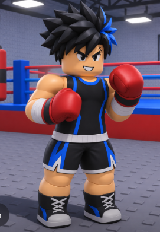
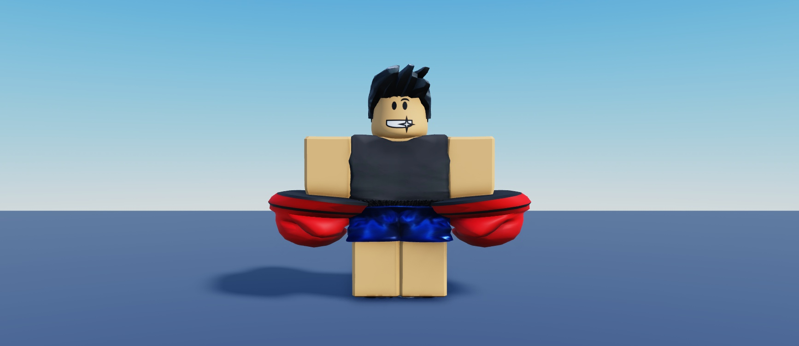
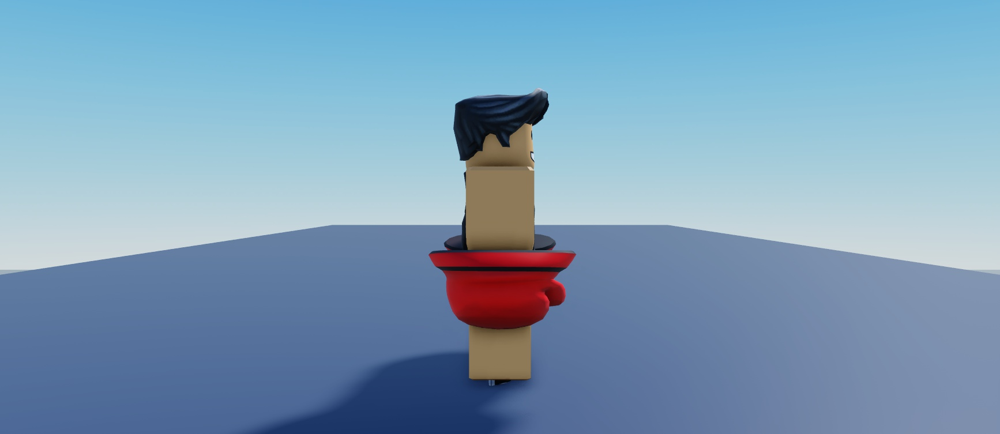
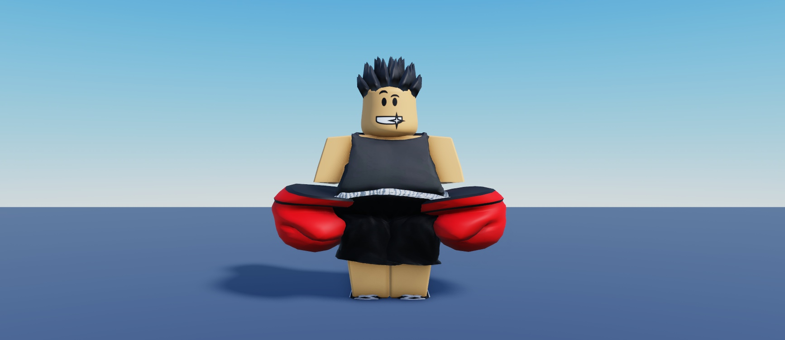
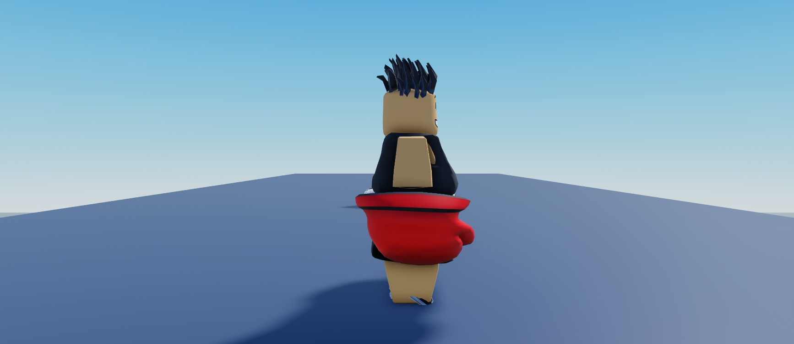
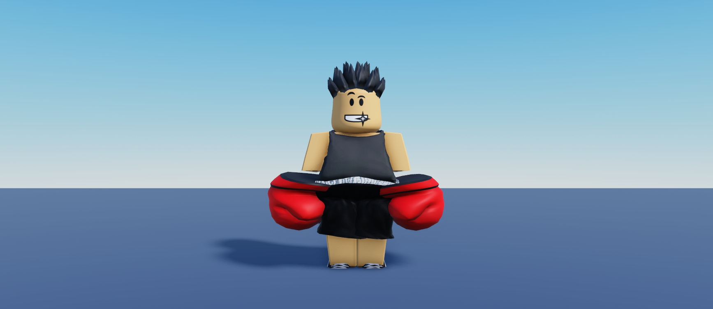
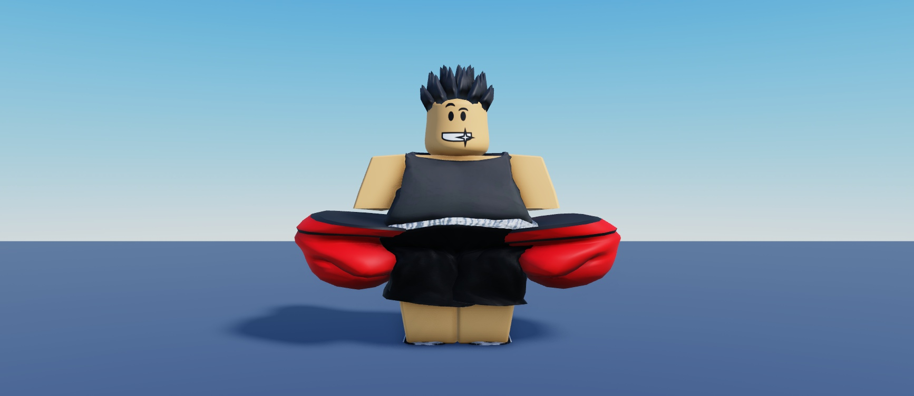

Capturas reales de Studio, 28 de noviembre de 2026. A–D descartadas. Estas son propuestas, no el personaje definitivo. Catálogo, autores, respaldos y escalas.
Pendiente: los tenis se deforman o quedan ocultos. Faltan ribetes azules y ajustar el volumen de camiseta/guantes. No se ha iniciado Parte B.





Misma cámara y distancia. Ancho/profundidad/alto: Flaco 0.82/0.85/0.85; Bestia 1.20/1.15/0.92. Cabeza 1 en ambos. Los guantes también crecen: hace falta controlar su tamaño.


La página recorta los márgenes de las capturas para facilitar la comparación. Pulsa cada captura para ver el archivo completo sin retoques.